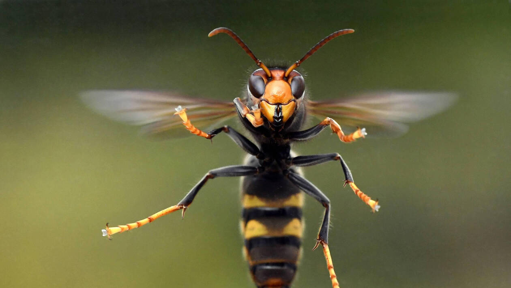

Les frelons et les guêpes
Très peu velus, au corps fin et long, parfois un peu agressifs. Ils construisent des nids « en papier mâché » pouvant contenir, chez certaines espèces, plusieurs milliers d’individus !
Très peu velus, au corps fin et long, parfois un peu agressifs. Ils construisent des nids « en papier mâché » pouvant contenir, chez certaines espèces, plusieurs milliers d’individus !